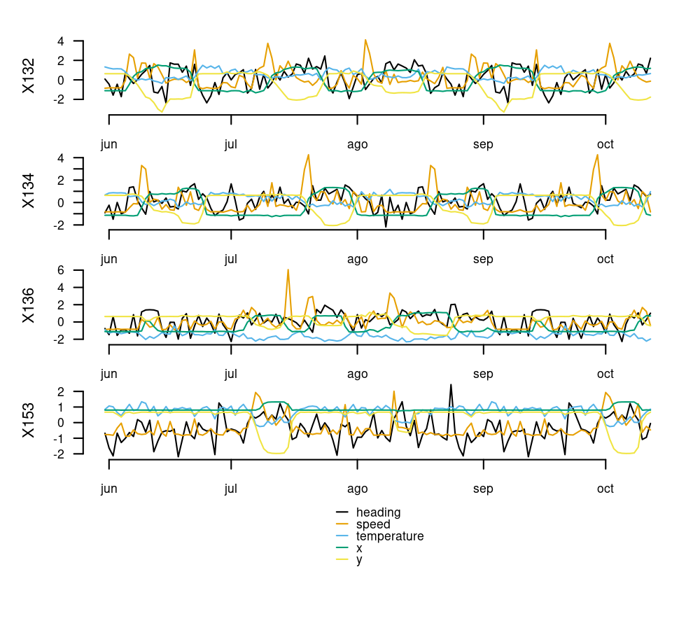
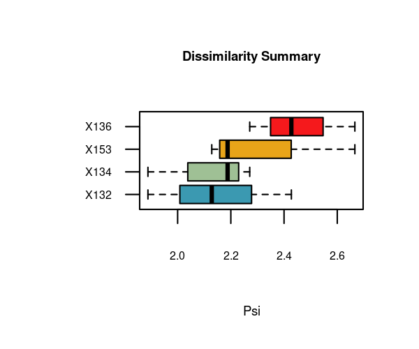
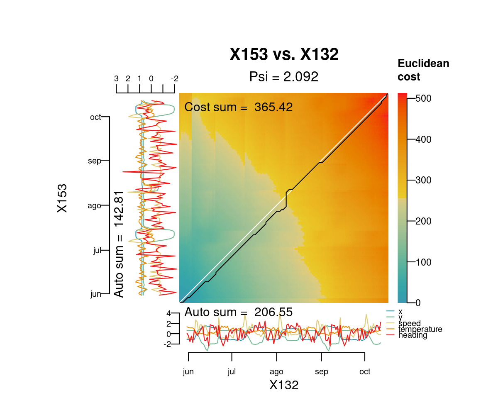
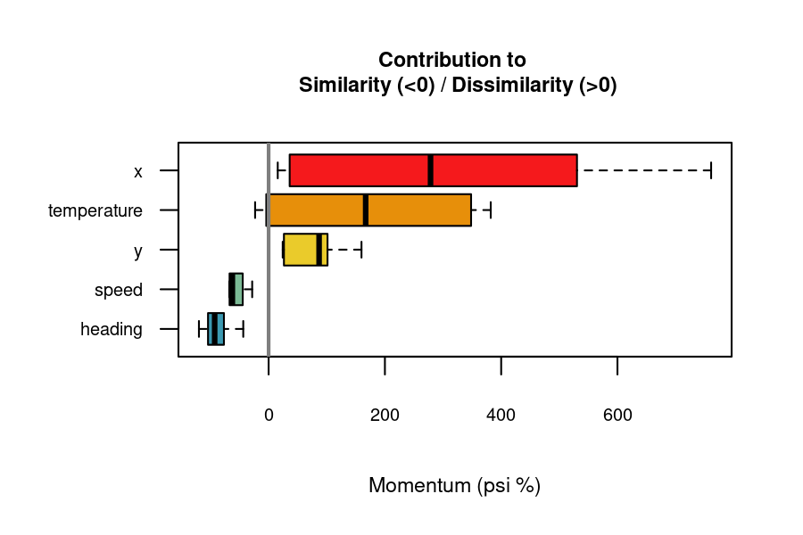
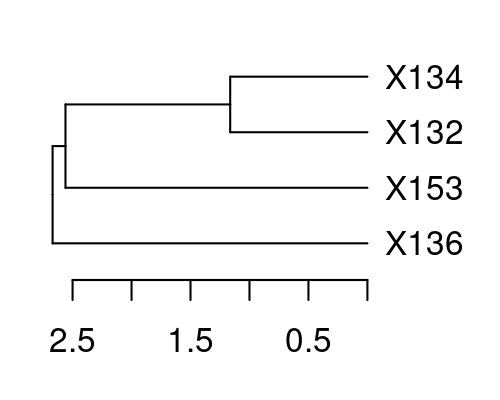

Warning
Version 2.0 of distantia is a full re-write of the original package and will break existing workflows before making them better. Please refer to the Changelog for details before updating.
Summary
The R package distantia offers an efficient, feature-rich toolkit for managing, comparing, and analyzing time series data. It is designed to handle a wide range of scenarios, including:
- Multivariate and univariate time series.
- Regular and irregular sampling.
- Time series of different lengths.
Key Features
Comprehensive Analytical Tools
- 10 distance metrics: see
distantia::distances. - The normalized dissimilarity metric
psi. - Free and Restricted Dynamic Time Warping (DTW) for shape-based comparison.
- A Lock-Step method for sample-to-sample comparison
- Restricted permutation tests for robust inferential support.
- Analysis of contribution to dissimilarity of individual variables in multivariate time series.
- Hierarchical and K-means clustering of time series based on dissimilarity matrices.
Time Series Management Tools
- Introduces time series lists (TSL), a versatile format for handling collections of time series stored as lists of
zooobjects. - Includes a suite of
tsl_...()functions for generating, resampling, transforming, analyzing, and visualizing univariate and multivariate time series.
Citation
If you find this package useful, please cite it as:
Blas M. Benito, H. John B. Birks (2020). distantia: an open-source toolset to quantify dissimilarity between multivariate ecological time-series. Ecography, 43(5), 660-667. doi: 10.1111/ecog.04895.
Blas M. Benito (2024). distantia: A Toolset for Time Series Dissimilarity Analysis. R package version 2.0.0. url: https://blasbenito.github.io/distantia/.
Install
Version 2.0.0 of distantia can be installed from CRAN and GitHub.
#CRAN
install.packages("distantia")
#GitHub
remotes::install_github(
repo = "blasbenito/distantia",
ref = "main"
)Getting Started
This section showcases several features of the package distantia. Please, check the Articles section for further details.
Setup
All heavy duty functions in distantia support parallelization via the future package. However, due to the high efficiency of the C++ backend of distantia, parallel execution is only worth it for very large datasets and restricted permutation analyses.
Progress bars provided by the progressr package are also available. Unfortunately, the latter does not work in Rmarkdown documents like this one.
Example Data
The albatross data frame contains daily GPS data of 4 individuals of Waved Albatross in the Pacific captured during the summer of 2008. Below are the first 10 rows of this data frame:
#> name time x y speed temperature heading
#> 1 X132 2008-05-31 -89.62097 -1.389512 0.1473333 29.06667 212.0307
#> 2 X132 2008-06-01 -89.62101 -1.389508 0.2156250 28.25000 184.0337
#> 3 X132 2008-06-02 -89.62101 -1.389503 0.2143750 27.68750 123.1269
#> 4 X132 2008-06-03 -89.62099 -1.389508 0.2018750 27.81250 183.4600
#> 5 X132 2008-06-04 -89.62098 -1.389507 0.2256250 27.68750 114.8931
#> 6 X132 2008-06-05 -89.62925 -1.425734 1.3706667 25.73333 245.8033The code below transforms the data to a Time Series List with tsl_initialize() and applies global scaling and centering with tsl_transform() and f_scale_global to facilitate time series comparisons.
tsl <- tsl_initialize(
x = distantia::albatross,
name_column = "name",
time_column = "time",
lock_step = TRUE
) |>
tsl_transform(
f = f_scale_global
)
tsl_plot(
tsl = tsl,
ylim = "relative"
)
Dissimilarity Analysis
Lock-Step Analysis
Lock-step analysis performs direct comparisons between samples observed at the same time without any time distortion. It requires time series of the same length preferably observed at the same times.
df_ls <- distantia(
tsl = tsl,
lock_step = TRUE
)
df_ls[, c("x", "y", "psi")]
#> x y psi
#> 1 X132 X134 1.888451
#> 3 X132 X153 2.128340
#> 5 X134 X153 2.187862
#> 4 X134 X136 2.270977
#> 2 X132 X136 2.427479
#> 6 X136 X153 2.666099The “psi” column shows normalized dissimilarity values and is used to sort the data frame from lowest to highest dissimilarity. Hence, the first row shows the most similar pair of time series.
The function distantia_boxplot() enables a quick identification of the time series that are either more dissimilar (top) or similar (bottom) to others.
distantia_boxplot(df = df_ls, text_cex = 0.8)
Dynamic Time Warping
By default, distantia() computes unrestricted dynamic time warping with orthogonal and diagonal least cost paths.
df_dtw <- distantia(
tsl = tsl
)
df_dtw[, c("x", "y", "psi")]
#> x y psi
#> 1 X132 X134 1.163499
#> 5 X134 X153 2.115504
#> 4 X134 X136 2.206298
#> 3 X132 X153 2.306471
#> 2 X132 X136 2.307844
#> 6 X136 X153 2.686551The function distantia_dtw_plot() provides detailed insights into the alignment between a pair of time series resulting from DTW.
distantia_dtw_plot(
tsl = tsl[c("X132", "X153")]
)
Deviations from the perfect diagonal in the least-cost path reveal adjustments made by DTW to align time series by shape rather than time.
The article Dynamic Time Warping vs Lock-Step provides further insights on the advantages and disadvantages of each method in different scenarios.
Permutation Test
The function distantia() implements restricted permutation tests to assess the significance of dissimilarity scores. It provides several setups to support different assumptions.
For example, the configuration below rearranges complete rows within 7-day blocks, assuming strong dependencies within rows and between observations that are close in time.
future::plan(future::multisession)
df_dtw <- distantia(
tsl = tsl,
repetitions = 1000,
permutation = "restricted_by_row",
block_size = 7 #one week
)
future::plan(future::sequential)
df_dtw[, c("x", "y", "psi", "p_value")]
#> x y psi p_value
#> 1 X132 X134 1.163499 0.001
#> 5 X134 X153 2.115504 0.380
#> 4 X134 X136 2.206298 0.134
#> 3 X132 X153 2.306471 0.376
#> 2 X132 X136 2.307844 0.002
#> 6 X136 X153 2.686551 0.005The “p_value” column represents the fraction of permutations yielding a psi score lower than the observed value, and indicates the strength of similarity between two time series. A significance threshold (e.g., 0.05, depending on iterations) helps identifying pairs of time series with a robust similarity.
Variable Importance
When comparing multivariate time series, certain variables contribute more to similarity or dissimilarity. The momentum() function uses a leave-one-out algorithm to quantify each variable’s contribution to the overall dissimilarity between two time series.
df_importance <- momentum(
tsl = tsl
)
df_importance[, c("x", "y", "variable", "importance", "effect")]
#> x y variable importance effect
#> 1 X132 X134 x 89.721187 decreases similarity
#> 2 X132 X134 y 101.305396 decreases similarity
#> 3 X132 X134 speed -28.286386 increases similarity
#> 4 X132 X134 temperature 78.130508 decreases similarity
#> 5 X132 X134 heading -43.644053 increases similarity
#> 6 X132 X136 x 15.687570 decreases similarity
#> 7 X132 X136 y 82.867368 decreases similarity
#> 8 X132 X136 speed -67.196851 increases similarity
#> 9 X132 X136 temperature 382.039900 decreases similarity
#> 10 X132 X136 heading -104.245839 increases similarity
#> 11 X132 X153 x 467.261463 decreases similarity
#> 12 X132 X153 y 159.727491 decreases similarity
#> 13 X132 X153 speed -44.549191 increases similarity
#> 14 X132 X153 temperature -4.016121 increases similarity
#> 15 X132 X153 heading -88.852346 increases similarity
#> 16 X134 X136 x 36.205194 decreases similarity
#> 17 X134 X136 y 90.757712 decreases similarity
#> 18 X134 X136 speed -61.923595 increases similarity
#> 19 X134 X136 temperature 348.244258 decreases similarity
#> 20 X134 X136 heading -96.737145 increases similarity
#> 21 X134 X153 x 761.132445 decreases similarity
#> 22 X134 X153 y 26.329542 decreases similarity
#> 23 X134 X153 speed -62.801312 increases similarity
#> 24 X134 X153 temperature -23.264433 increases similarity
#> 25 X134 X153 heading -76.874072 increases similarity
#> 26 X136 X153 x 530.402462 decreases similarity
#> 27 X136 X153 y 24.217594 decreases similarity
#> 28 X136 X153 speed -67.659029 increases similarity
#> 29 X136 X153 temperature 255.711643 decreases similarity
#> 30 X136 X153 heading -119.877355 increases similarityPositive “importance” values indicate variables contributing to dissimilarity, while negative values indicate contribution to similarity. The function documentation provides more details on how importance scores are computed.
The momentum_boxplot() function provides a quick insight into which variables contribute the most to similarity or dissimilarity across all pairs of time series.
momentum_boxplot(
df = df_importance
)
Clustering
The package distantia provides tools to group together time series by dissimilarity using hierarchical or K-means clustering. The example below applies the former to the albatross dataset to find out groups of individuals with the most similar movement time series.
dtw_hclust <- distantia_cluster_hclust(
df = df_dtw,
clusters = NULL, #automatic mode
method = NULL #automatic mode
)
#cluster object
dtw_hclust$cluster_object
#>
#> Call:
#> stats::hclust(d = d_dist, method = method)
#>
#> Cluster method : ward.D
#> Number of objects: 4
#number of clusters
dtw_hclust$clusters
#> [1] 3
#clustering data frame
#group label in column "cluster"
#negatives in column "silhouette_width" higlight anomalous cluster assignation
dtw_hclust$df
#> name cluster silhouette_width
#> 1 X132 1 0.4955501
#> 2 X134 1 0.4500134
#> 3 X136 2 0.0000000
#> 4 X153 3 0.0000000
#tree plot
par(mar=c(3,1,1,3))
plot(
x = stats::as.dendrogram(
dtw_hclust$cluster_object
),
horiz = TRUE
)
This is just a summary of the features implemented in the package. Please visit the Articles section to find out more about distantia.
Getting help
If you encounter bugs or issues with the documentation, please file a issue on GitHub.